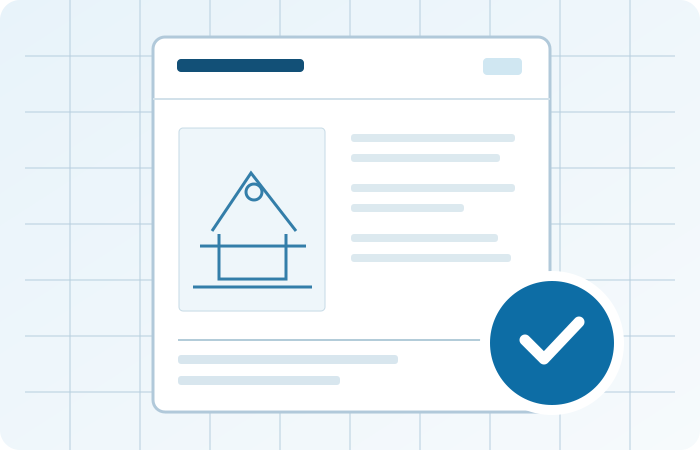

Factory & On-Site Inspection
Our technical specialists inspect machinery at manufacturing facilities, installation sites and other equipment locations, documenting applicable safety checks, measurements and inspection findings.
Explore serviceOMEGA provides testing, inspection and technical services for machinery and industrial equipment. Our specialists perform on-site machinery inspections and applicable technical tests at manufacturing facilities, installation sites and other equipment locations, supporting safety assessment, technical documentation and conformity assessment.
Structured assessment activities tailored to the product, its technical requirements and the intended market.
Our technical specialists inspect machinery at manufacturing facilities, installation sites and other equipment locations, documenting applicable safety checks, measurements and inspection findings.
Explore serviceTechnical Construction File (TCF) preparation and review, supported by on-site machinery checks, test records and risk assessment evidence.
Explore serviceApplicable machinery safety tests and measurements on site, with specialist laboratory testing coordinated when required.
Explore serviceMachinery hazards, safety measures and risk assessments based on the applicable technical requirements.
Explore serviceOMEGA-issued certificates of inspection and technical reports for agreed scopes, with online record verification.
Explore serviceSupport with technical preparation and cooperation with specialist testing laboratories and notified bodies where needed.
Explore service
Our technical specialists can assess machinery directly at the manufacturing facility, installation site or other equipment location. On-site inspections and applicable functional, electrical and mechanical checks help build evidence for risk assessment, technical reports and Technical Construction Files (TCF). Where specialist laboratory testing or notified body involvement is needed, we coordinate those activities separately.
From initial product details through technical review and documentation.
We identify the product, project objectives and applicable technical framework.
Available technical documentation, declarations and relevant standards are reviewed.
On-site inspection, applicable machinery tests, risk assessment and specialist laboratory coordination according to the agreed scope.
Findings, observations and supporting records are organized for project follow-up.
Our services focus on industrial products and equipment, with requirements determined on a project-by-project basis.
Contact our team for technical inspections, documentation review and product conformity assessment support.